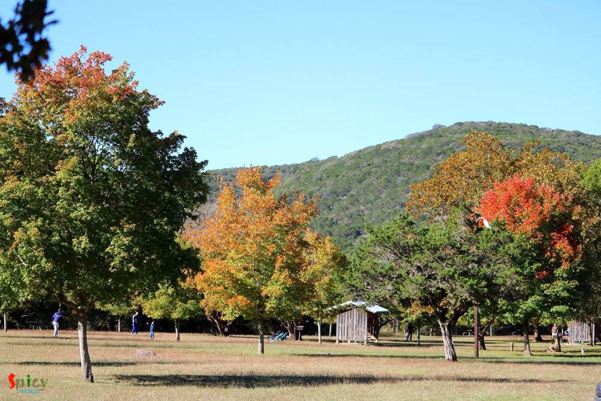
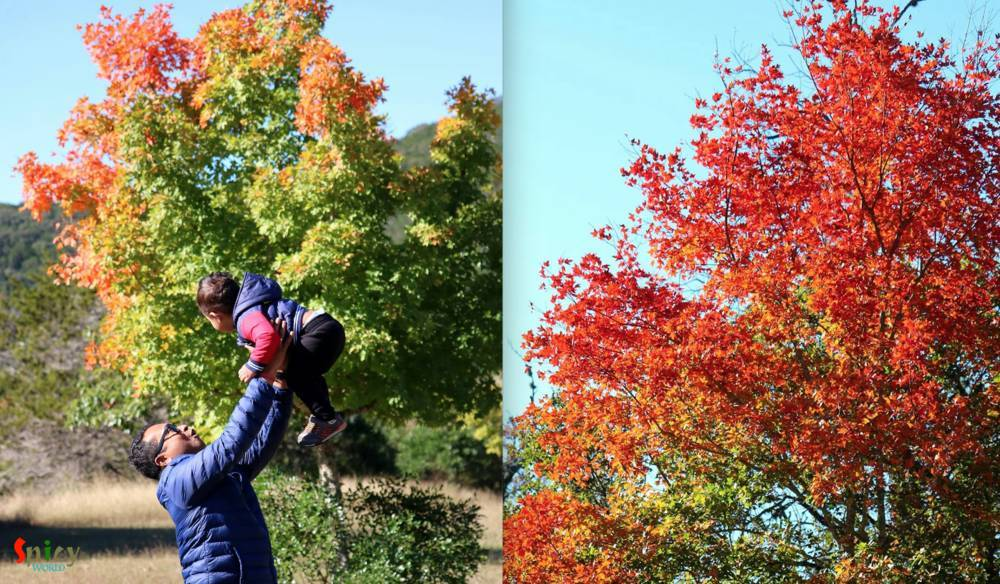
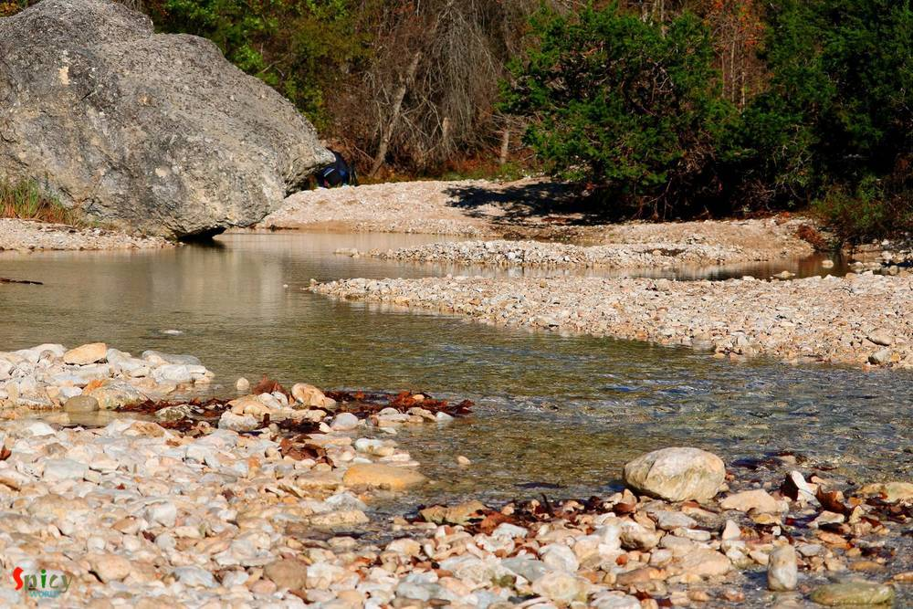
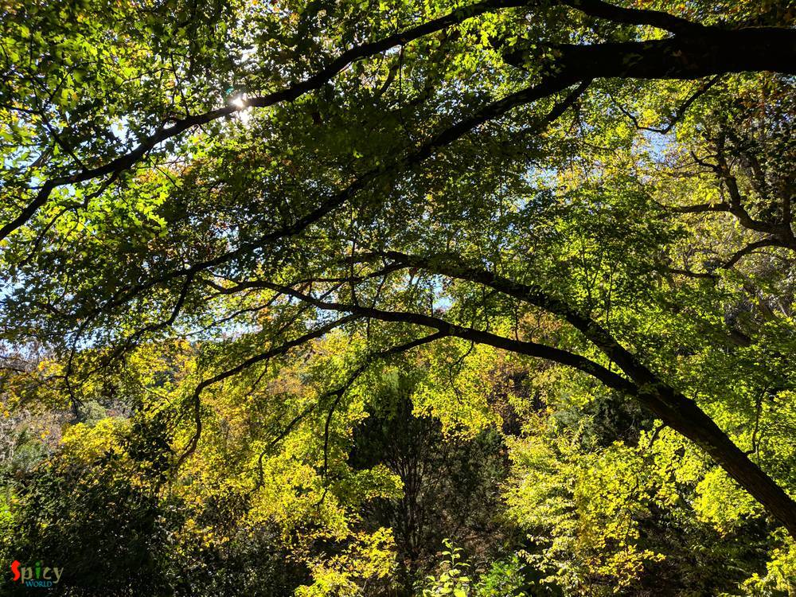
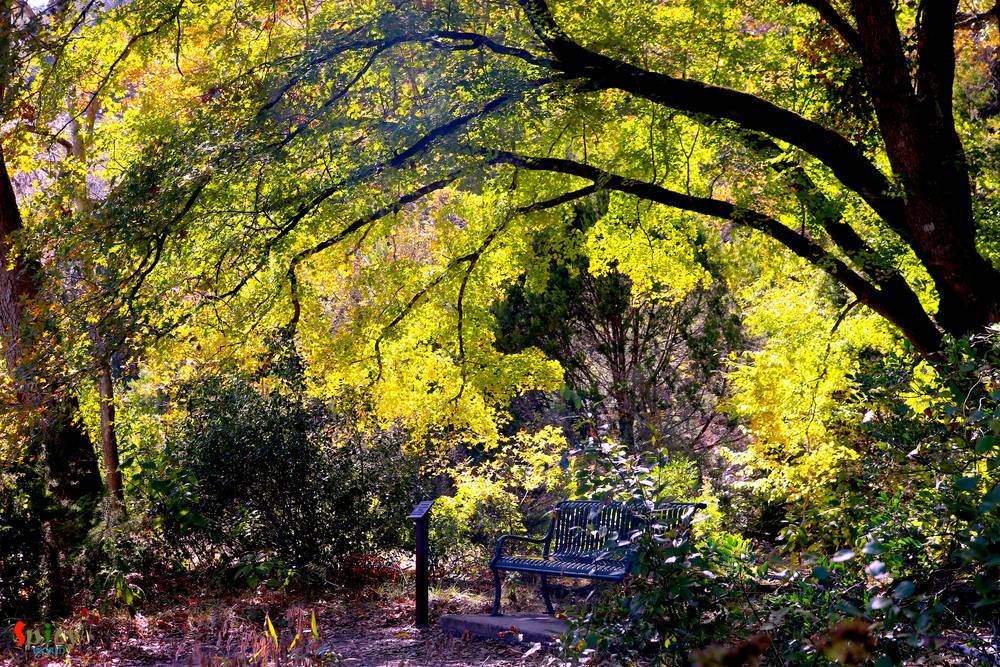
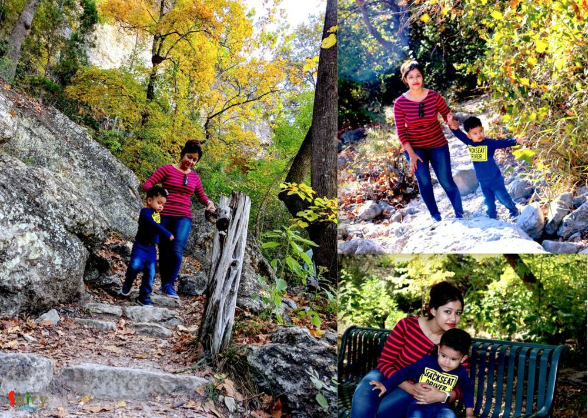
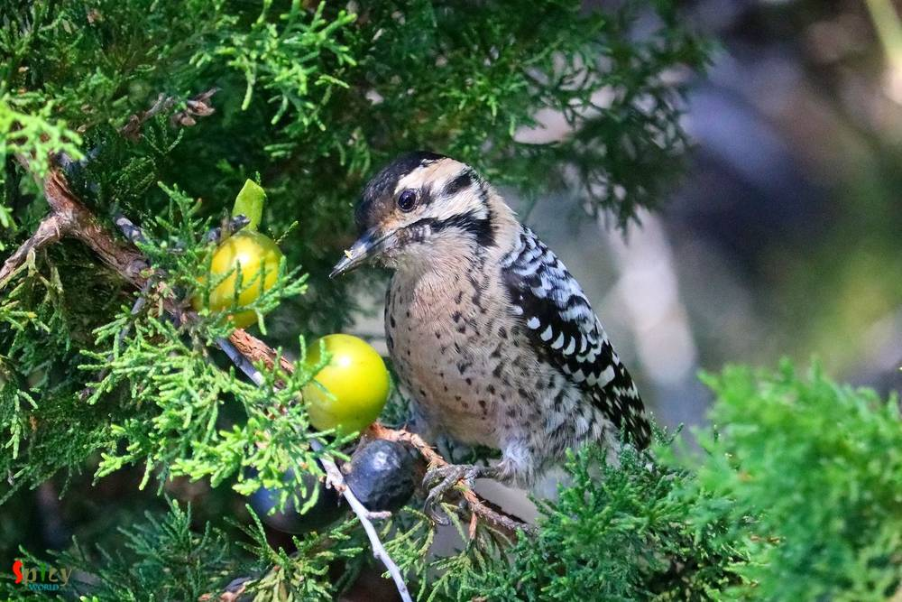

We visited Lost Maples back to back two years, so we will try to narrate the story that way you can plan your visit properly based upon our experience.
The website of Texas Parks and Wildlife lists the best time of the year when you can see the Fall color. It has the page for "Fall Foliage Color Report" which is updated with details. So keep following the reports and plan in a weekend.
The trip should start at early morning because in peak season the park is full and wait time or to get a parking is very tough. Make sure to bring water and light food with you as there are not really any good foos option around.
Lost Maples State Park:
First stop should be at the Lost Maples State Park where you can see most of the colors, so the trip should start with that. For us it was 86miles which takes about 1hr 45minutes, the drive is beautiful. (From San Antonio north).
We started around 7AM and reach by 9AM. You need to get the entry passes which will cost $6 per person. Then proceed inside the park & secure a parking. The parking area is quite big but on a peak season finding a good parking is tough and may delay the trip.
The parking area is big and it has plenty of small trees and those change their color. A very good place to play with your kid. They can run around, so we did spent quite few minutes there. Also if you bring some food, there are tables where you can eat, but I will only recommend eating fruits as you are inside nature.
After spending & playing with our kid we started walking down the trails, our kid was very much excited and he stop on every step and start picking stuffs, there is a nice little river along the trail we walked. Its a beautiful place and some white rocks were there which is a good place for the kid to play.
After spending few minutes, the walk started, its quite a bit rocky but beautiful. Following are some clips of the trails. We stop for rest in few places and enjoyed the walk.
As Coco (our kid) is small, so we couldn't complete the entire trail and decided to leave and visit the next park which is Garner State Park. And we started for that and on the way stopped at Leakey, Texas (a small city) for a quick lunch.
Garner State Park:
We went to the visitor center and show them the pass from Lost Maples and they said we do not need to buy the pass again and they just renewed the pass for Garner State Park. Which is very good. We came to know the day pass is valid for any state parks for a day as many time as you want to enter.
This park is a very good place to be and do camping, we noticed lot of family with kids doing camping. Kids were playing and so we parked the car and started playing with our kid too. The river side is very beautiful and we spent about an hour there.
With this out day trip ended, we started driving back to San Antonio.
Overall our experience was quite good and we appreciate the way the parks are maintained and the staffs are so helpful and informative. So, why sitting around, go out and have fun and enjoy with friends and family in Fall season.
